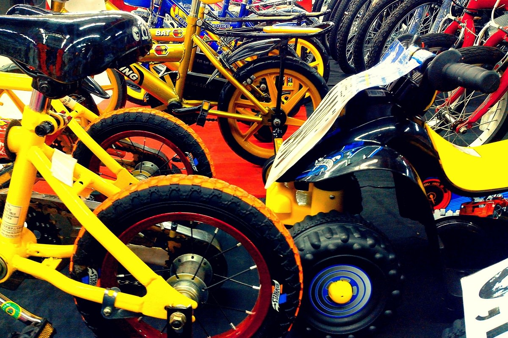
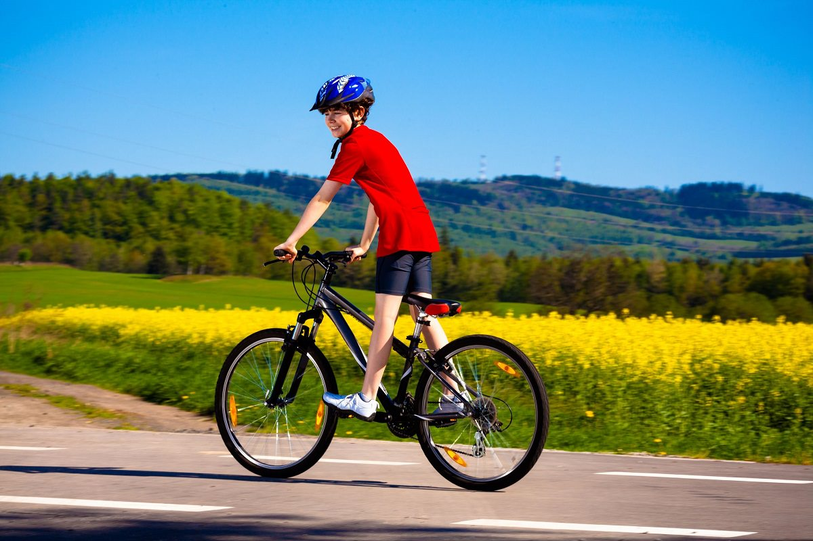

#1 – Buying your kid a bike isn’t as simple as it was in the old days
At least not as simple as it was for me. When it came to my parents choosing the perfect bike for me it came down to which one of my brothers’ old bikes I wanted out of the garage. Having chosen, my father would lift the bike down off the peg, made sure it wouldn’t fall apart, and then said I had to be home before dark.
As adults, the proper way we choose our bikes is by reference to the frame size. If we can stand over the bike with our feet planted on either side of the upper tube, then we can say with some certainty the bike fits. This is not how you choose the right size bike for children.
Fear not though, because fortunately there are guides and guidelines for helping you choose a bike that is perfect for your child’s age and size.

Fig1. - Variety of bikes
#2 – What size bike does your child need?
Roughly speaking, 12 inch wheels are designed for kids starting off biking and who on average are aged between 3-5 years of age, and by the time your child is 14 years old, you will mostly be looking at 24 inch wheel.
So how do you discover what size bike is perfect for your child?
The general rule of thumb is to use a sizing chart. Sizing charts are available from all good bike websites and stores. There are slight variations in some of them, especially when moving to adult sizing charts, but for children they do remain fairly consistent.

Fig2. - The right size
#3 – Height charts are not the definitive factor when choosing a kid’s bike
Height charts are not the be all and end all when it comes to picking your kid’s bike. Think of them more as a starting point to help give you an idea of what you after.
If the sales guy in the local bike store insists on only using a height chart when you visit, then turn round and walk away.
By far the most important thing to do is to get a test ride and observe how well your child is able to ride easily and in a controlled manner. There are other factors at work other than overall height. You must take into account the proportions of your kid’s body and personal riding disposition.
Fig3. - Get a test drive
#4 – Why do some kids bikes seem to weigh as much my own bike?
More commonly these days, most bike manufacturers now offer decent value lightweight bikes for your kid. This is an important fact to be aware of as proportionally speaking, kids’ bikes are harder to pedal than adult bikes anyway due to the smaller wheel base. So if you can, do try to buy as light as you can.